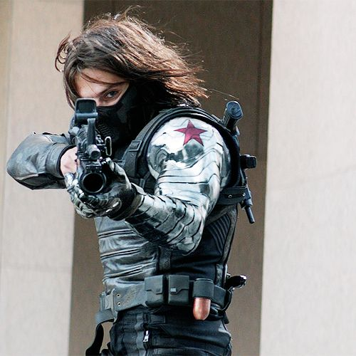
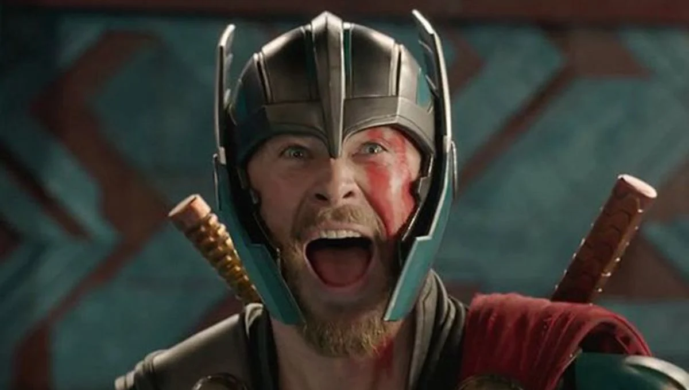

Quill's Top 10 Fictional Characters (by Quill)
10. Black Panther

Famous Quote
"WAKANDA FOREVER!"
King T'Challa or more famously known as the Black Panther is a superhero originating from the fictional African nation of Wakanda.
In the distant past, a meteorite made of the (fictional) vibration-absorbing mineral vibranium crashed in Wakanda, and was unearthed. Reasoning that outsiders would exploit Wakanda for this valuable resource, the ruler, King T'Chaka, like his father and other Panthers before him, concealed his country from the outside world.
Fun Fact: The Black Panther is actually the ceremonial title given to the chief of the Panther Tribe of the advanced African nation of Wakanda. In addition to ruling the country, he is also paramount chief of its various tribes (collectively referred to as the Wakandas). The Panther habit is a symbol of office (head of state) and is used even during diplomatic missions. The Panther is a hereditary title, but one must still earn it.
T'Challa earned the title and attributes of the Black Panther by defeating the various champions of the Wakandan tribes. One of his first acts was to disband and exile the Hatut Zeraze—the Wakandan secret police—and its leader, his adopted brother Hunter the White Wolf.
He sold off small portions of vibranium to scientific institutions around the world, amassing a fortune which he used to arm himself with advanced technology. Later, to keep peace, he picked Dora Milaje ("adored ones") from rival tribes to serve as his personal guard.
Now that we know some information about King T'Challa himself, what is my opinion?
The Black Panther is actually a super cool character with a sick looking suit. In the MCU, his suit is made out of the fictional metal "Vibranium". Since Vibranium absorbs vibration, his suit can store kinetic energy from impacts he takes during battles and can release said kinetic energy anytime he wants.
Unfortunately, there are cooler characters (in my humble opinion) other than The Black Panther. And that is why The Black Panther sits on number 10.
9. The Winter Soldier
Famous Quote
"So what’s our plan? So no plan. Great."
Bucky Barnes or "The Winter Soldier" was a villain turned hero originating from the USA. He was actually Steve Rogers or more famously known as Captain America's best friend before his untimely death... Or so we thought.
What happened after his "death"?
Bucky Barnes actually got revived by the villainous group H.Y.D.R.A. turning him into their personal mind-controlled assassin.
In the movie "Captain America: The Winter Soldier", he was tasked to kill Nick Fury which he succesfully did (except that Nick Fury faked his death). And there he met his old friend, Captain America. He became the main enemy in the movie, and in the end he snapped out of the mind control and saved Captain America from drowning. This set him up for the final movie in the Captain America trilogy "Captain America: Civil War".
Fun Fact: He is actually the one who killed Tony Stark's parents back in 1991. Why did he do that you ask? Because he got assigned a mission to steal a variant of the Super Soldier Serum that H.Y.D.R.A. wanted to use for the Winter Soldier.
Nevertheless, he became a huge ally during the Civil War and from then on became a favorite character. The Winter Soldier is one of the most badass characters in the MCU in my opinion. He has a left metal arm, he is a super soldier, he is an expert in guns.. What more could you want?
8. Thor
Famous Quote
“I am Thor, son of Odin!”
Thor Odinson is the Asgardian God of Thunder, the former king of Asgard, and a member of The Avengers. At first, Thor was an irresponsible, super cocky, and annoying guy to deal with until he reignited an an ancient war between Asgard and Jotunheim. Odin saw this and denied his right to the throne, stripped his power and hammer Mjolnir, and banished Thor to Midgard (Earth).
While exiled on Earth, Thor learned what "Humility" was, finding love with a human named Jane Foster, made some new friends and saved them from the "Destroyer" sent by Loki. Due to his self sacrifice, Odin deemed him worthy enought and granted his power back.
Long story short: He joined The Avengers in stopping Loki's plot of evil, stopped some elves trying to destroy the world, stopped his sister's plan for world domination, etc.
Fun Fact: In the movie "Thor: Love and Thunder", he adopted Gorr the God Butcher's daughter "Love" and he practically became a dad which is some crazy character development.
Thor is lowkey one of the best characters in the MCU. He has been through so much, losing his mother, losing his father, losing his brother. And after all of that, he still was a happy upbeat guy just want to live life and protect those in need.
7. Homelander

Famous Quote
"I'm Stronger, I'm Smarter, I'm BETTER, I AM BETTER!"
The Homelander (real name John Gillman) is the main antagonist of the series "The Boys". Homelander is the leader of The Seven, a group of powerful superheroes managed by Vought International.
With the face of a movie star and the power of a god, Homelander is considered the greatest superhero alive. Not only can he fly, but he also has super strength and super hearing, and he can see through almost anything with his x-ray vision and then destroy it with his laser eyes.
On the surface, he's affable, modest, and sincere; the ultimate Boy Scout, an American treasure, a God-fearing patriot. But just like mere mortals, even superheroes have secrets.
Why an antagonist you ask? It's because Homelander is more of a supervillain than a superhero since his morals are off the walls, he has no sympathy for humans. To him, being a superhero is all about the status and fame. He is the freaking Homelander and he can do whatever he wants.
Fun Fact: Homelander is actually the son of Soldier Boy, one of the greatest superheroes to exist. He was raised in a lab surrounded by doctors. Since he didn't have a family, he turned violent, aggressive, and downright hateful. Throughout his childhood he was put through painful experiments and surgeries to test the limits of his abilities.
Even though Homelander isn't that great of a guy, he still remains one of the best characters in "The Boys" which is why he deserves the spot of my top 10.
6. Dr Strange

Famous Quote
“Dormammu, I've come to bargain.”
Doctor Stephen Vincent Strange, M.D., Ph.D is a Master of the Mystic Arts. Originally being a brilliant but arrogant neurosurgeon, Strange got into a car accident which resulted with his hands becoming crippled. Once Western medicine failed him, Strange embarked on a journey to Kamar-Taj, where he was trained by the Ancient One in the ways of Magic and the Multiverse.
Although Strange's only was to heal his hands, he got dragged into a conflict with Kaecillius and his Zealots who were plotting to merge the Earth and Dark Dimension.
Following the death of The Ancient One, Strange became the new Sorcerer Supreme and protector of the Sanctum Sanctorum. Unfortunately on one faithful day, The Hulk crashed through the roof of his Sanctum Sanctorum bringing bad news to the superheroes of Earth. This is where he got dragged into a fight with the Black Order and entered space where he soon fought Thanos along with Starlord, Drax, Iron Man, Spiderman, and Mantis.
After Thanos snapped and removes half of the entire population of the universe, his status as Sorcerer Supreme was given to Wong.
Fun Fact: Strange became one of the first few to discover the existence of the Multiverse after helping Spiderman fix his problem which is also what the theme of his second movie "Doctor Strange in the Multiverse Of Madness
Doctor Strange is one of the greatest superheroes ever to be introduced in the MCU, he instantly became a fan favorite (me included). But sadly, there is another that is more powerful than him.
Jake the Dog

Famous Quote
“Bacon pancakes, makin' bacon pancakes, Take some bacon and I'll put it in a pancake, Bacon pancakes, that's what it's gonna make, Bacon pancaaake!”
Jake is the deuteragonist of Adventure Time. He is a dog/shape-shifter hybrid, referred to by others as a "magical dog," and Finn's constant companion, best friend, and adoptive brother.
Jake has a unique set of abilities called Stretchy Powers that allow him to manipulate the shape and size of his body, coming in handy on innumerable occasions throughout his and Finn's adventures. Jake was 28 years old at his debut in "magical dog years," and ages throughout the series, though he rarely acts mature.
Jake is actually married to a unicorn named Lady Rainicorn (who is korean) and has 5 pups. Their names are Charlie, Viola, T.V., Kim Kil Whan, Jake Jr.